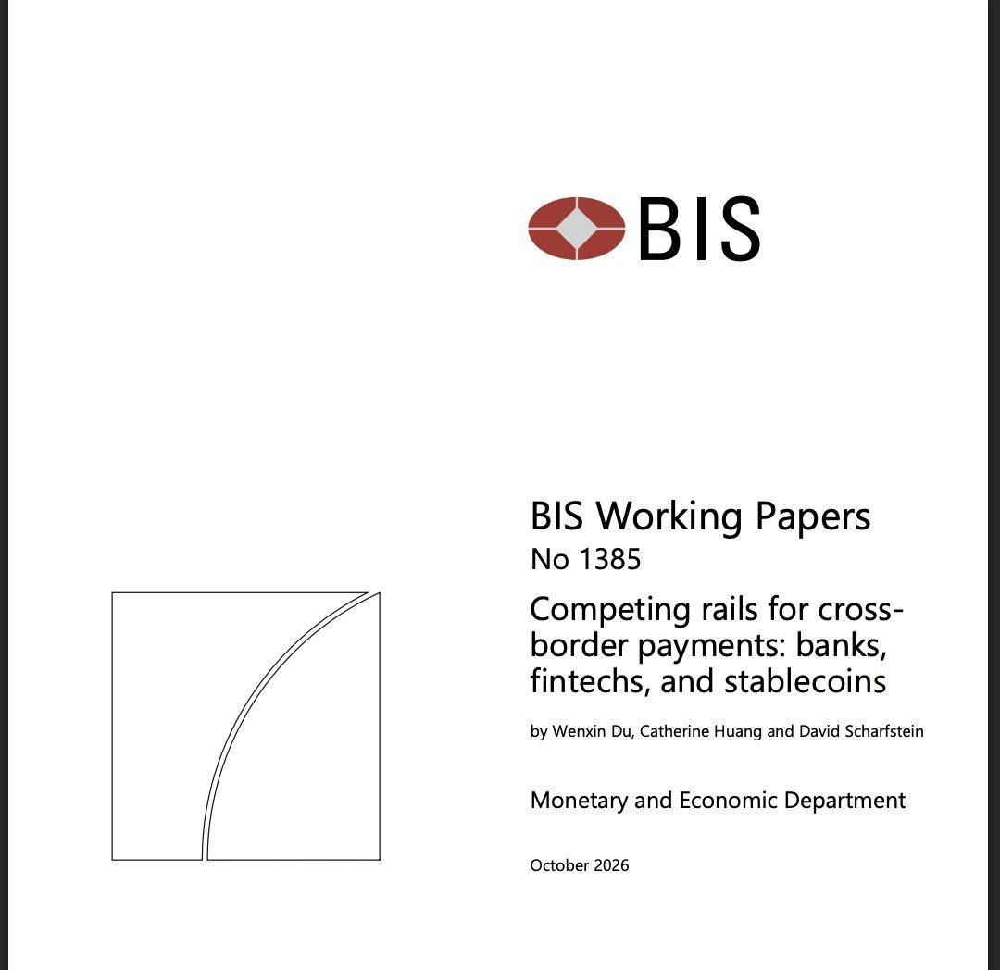
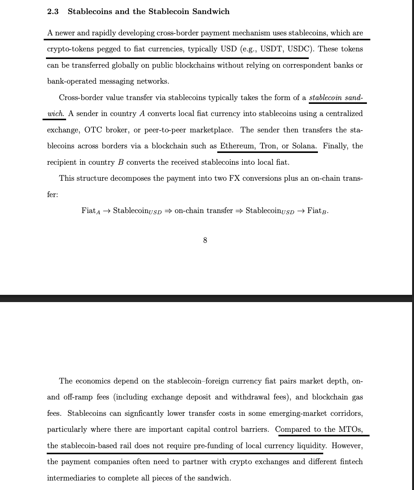
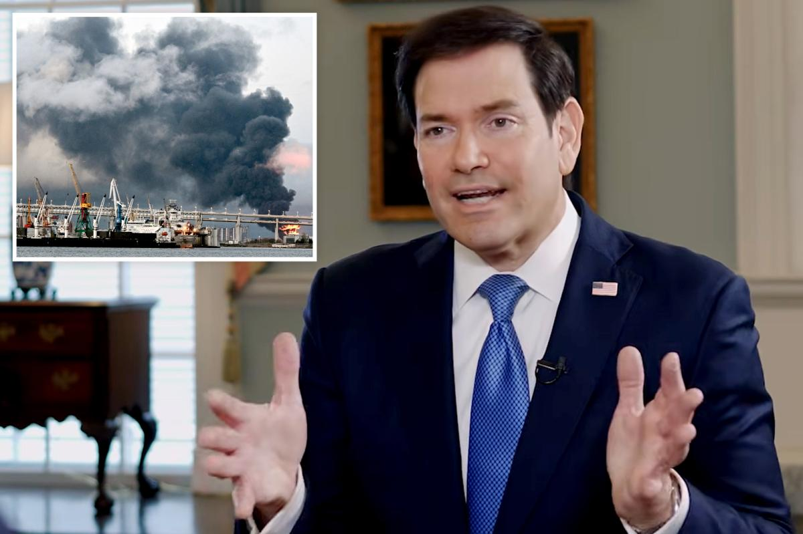
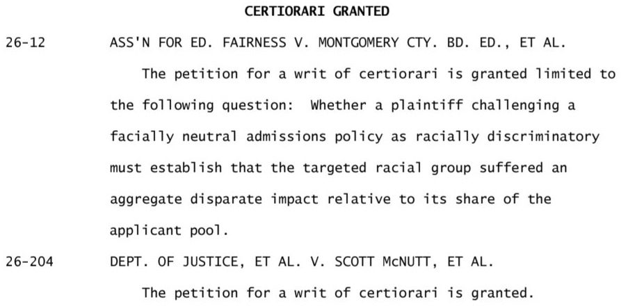
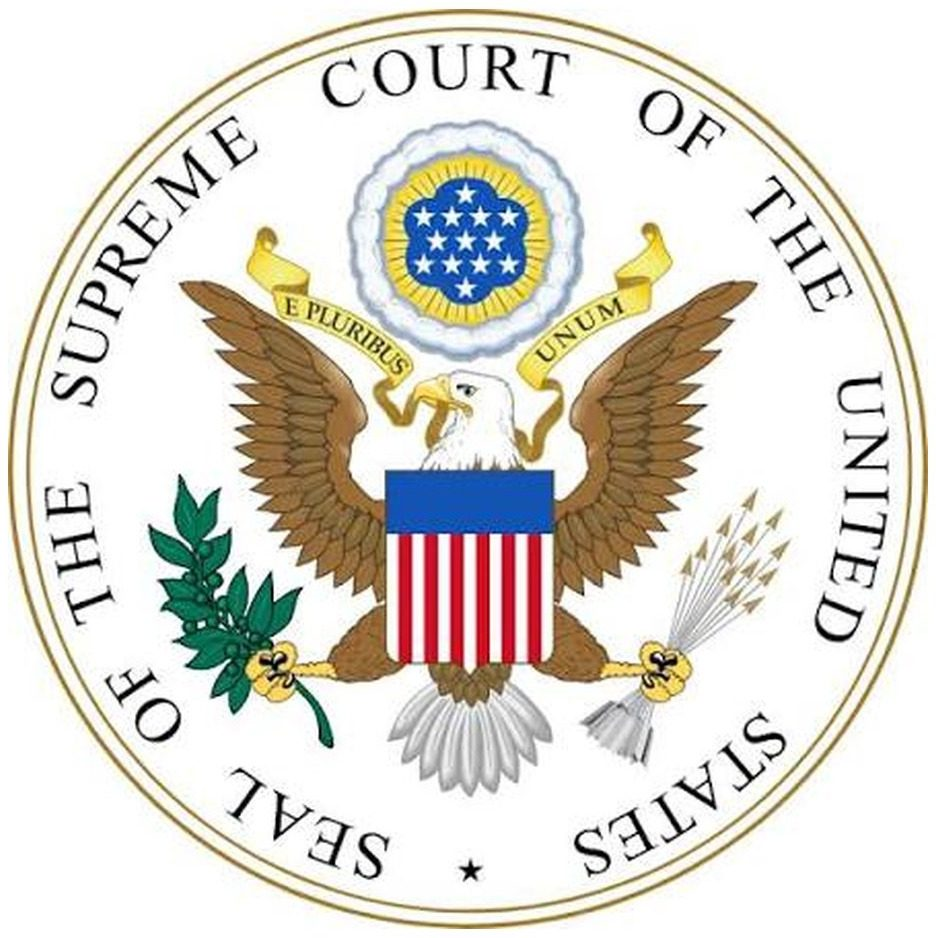
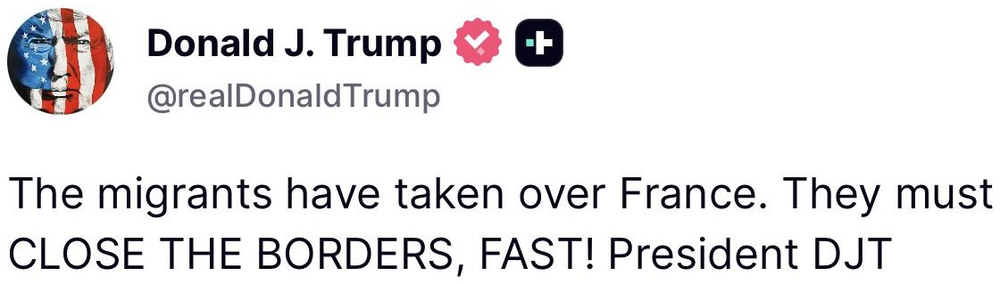
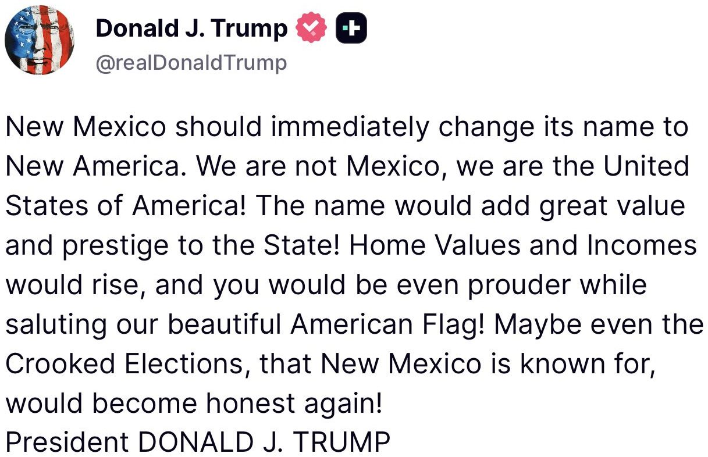
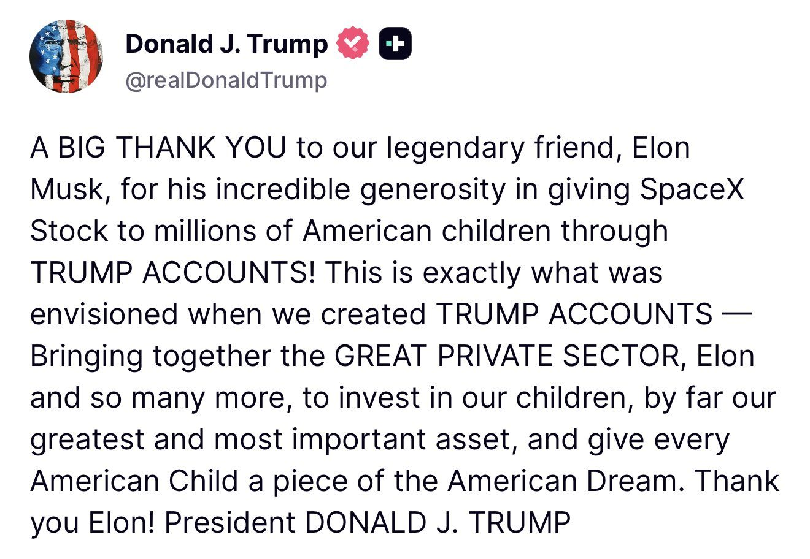

Today, Treasury announced that @FinCENnews has identified approximately $270 million in suspicious financial activity potentially linked to fraud against federal student aid programs. FinCEN has referred these findings to federal investigators to pursue potential fraud schemes targeting federal student aid programs and help ensure those responsible are held accountable. These referrals underscore the Trump Administration’s commitment to eliminating fraud, protecting taxpayers, and safeguarding the integrity of federal student aid programs.
The Department of War announced today the successful completion of its initial research security audits of 30 universities. All 30 universities have fully mitigated identified relationships with foreign entities of concern included on the most recent NDAA Section 1286 list, published in July 2026. Overall, the audits resulted in more than 80 termination-related actions across the 30 universities. These actions included the termination of relationships with entities on the NDAA Section 1286 list, as well as precautionary terminations involving entities not specifically identified on the list.
While the Department worked collaboratively with all 30 universities, several went above and beyond by quickly terminating problematic relationships with entities on the NDAA Section 1286 list and implementing significant mitigation measures to safeguard research. These institutions include: Oklahoma State University The Pennsylvania State University University of North Carolina at Chapel Hill University of South Carolina University of Southern California University of Texas at Austin Virginia Tech
"These academic institutions that went above and beyond deserve immense credit for setting the benchmark in domestic research security," said Joseph Jewell, Assistant Secretary of War for Science and Technology. "Rather than settling for minimum compliance, these institutions took bold, self-initiated steps to protect their labs, faculty, and intellectual property from foreign exploitation. Their proactive commitment ensures that groundbreaking research directly empowers the American warfighter and strengthens our Nation's technological edge."
The Department will continue to update the NDAA Section 1286 list, as appropriate, and assess universities that retain problematic relationships with entities on the list.
"I am proud that the Department of War went 30-for-30 in working with these top-tier research universities to terminate relationships with malign foreign entities. The Department commends the institutions that took decisive action to mitigate relationships that could expose American research to foreign exploitation," said Emil Michael, Under Secretary of War for Research and Engineering. "Our work will continue. Institutions that fail to meet research security standards are on notice: taxpayer dollars will not support institutions whose partnerships put the American warfighter or the Nation's technological advantage at risk."
The Department will continue this effort alongside partners in Congress, specifically the House and Senate Armed Services Committees, the House and Senate Appropriations Committees, and the House Select Committee on the Chinese Communist Party.
Read the full press release here: https://www.war.gov/News/Releases/Release/Article/4628392/department-of-war-announces-research-security-mitigation-results-from-academic/
Federal student aid is intended to expand educational opportunities, not line the pockets of fraudsters who steal from students pursuing their education and hardworking taxpayers. The Trump Administration will not tolerate criminals who exploit government programs for personal gain. Treasury is working with financial institutions and law enforcement to identify these fraud schemes, recover stolen funds, and hold those responsible accountable.
The @CivilRights Division & @usedgov have reached a settlement with UNC to end race discrimination in admissions & antisemitism on campus. Federally funded higher ed institutions take note—avoid litigation by ensuring equal treatment for ALL students in admissions & campus life!
🌑 NEW: Bank for International Settlements finds stablecoins compete with cross-border banking infrastructure.
Ethereum, Solana and Tron are identified as networks facilitating international stablecoin transfers without relying on correspondent banks or SWIFT messaging.
Researchers examine the "stablecoin sandwich," citing Félix Pago's U.S.–Mexico remittance service as a real-world application.
The findings show that stablecoin-based foreign exchange can approach wholesale market rates, while blockchain transaction fees are economically negligible.


Over 90% of the financial system onchain within the next decade?
@SethGinns, CIO of Franklin Crypto explains how the convergence of AI, tokenization, and digital wallets could get us there.
@TheMarketRunup x @theblondebroker
▶ Watch on XWall Street’s embrace of blockchain technology is moving beyond merely creating digital versions of stocks, bonds and money-market funds toward a bigger goal: changing how those assets move through the financial system
JUST IN: BlackRock pushes to bring tokenized assets into traditional banking and financial systems.
Rubio says Ukraine attacked ships carrying US-owned oil, demands Zelensky bring 'an end to this war' https://t.co/G6AjIaAvf1

.@POTUS: "We've given a lot to Ukraine. They've given nothing to us. Remember that."
▶ Watch on XBREAKING: Russia struck energy facilities across 11 Ukrainian regions overnight, one of the largest attacks on energy infrastructure of the war, Ukraine's Ministry of Energy and Zelensky says.
More than 10 energy sites and 28 substations were hit, leaving at least 550,000 homes without power.
Ukraine will respond. Zelensky said last week that "the main rule of our operations is to respond" after ending the pause on strikes on Russian energy.
NEW: The Supreme Court will decide whether a 160-year-old federal ban on distilling alcohol in homes exceeds Congress's authority to impose restrictions aimed at collecting alcohol taxes.

JUST IN: Trump administration asks the Supreme Court to stop lower courts from fully canceling federal agency rules for the whole country

#BREAKING: Supreme Court upholds Pentagon decision to toss plea deal for 9/11 terrorists.


TODAY AT THE WHITE HOUSE: President Donald J. Trump & First Lady Melania Trump sign an executive order creating a Women’s Health Division at the NIH & a White House Women’s Health Task Force, aiming to close research gaps & modernize care for women 🇺🇸
Tune in at 11 AM EST!

For two years the Trump Admin has sought federal voter rolls and welfare rolls from blue states to run against the federal non-citizen database—Democrat states refused and Democrat judges blocked DOJ/DHS. In every blue state you can vote or get welfare just by checking a box.
JUST IN: Trump invokes wartime law to revive a stalled natural gas pipeline from Pennsylvania to New York, with construction potentially beginning this spring.
Energy Department Advances Constitution Pipeline Project with $42 Million in Defense Production Act Funding
BREAKING: Federal agents launch sweeping voter fraud raids across California, targeting dozens of foreign nationals accused of illegally registering to vote in U.S. elections.
JUST IN: 🇷🇺 Russia calls for reopening the Strait of Hormuz.